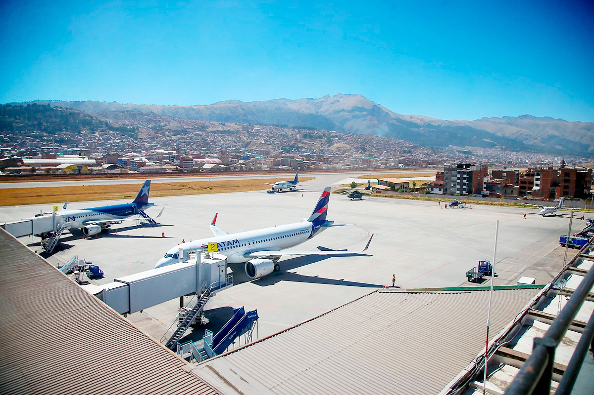
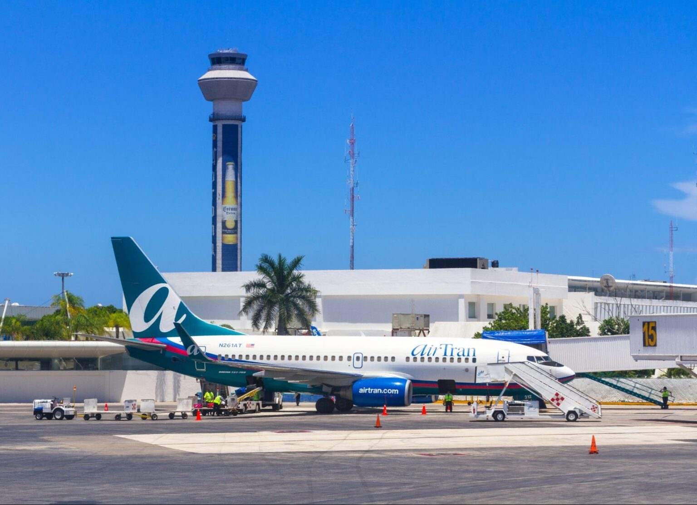
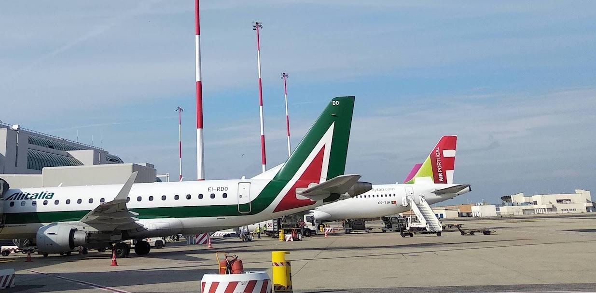
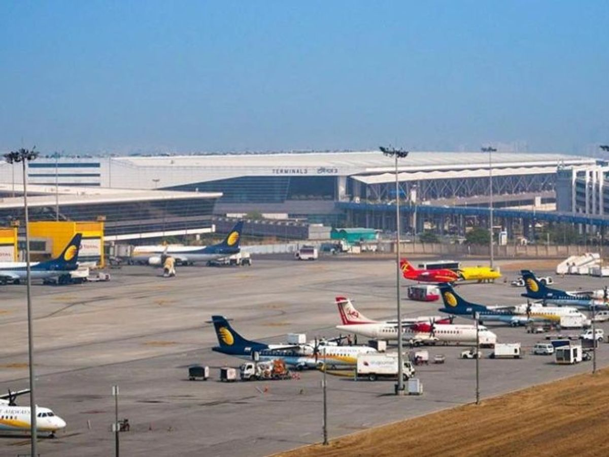
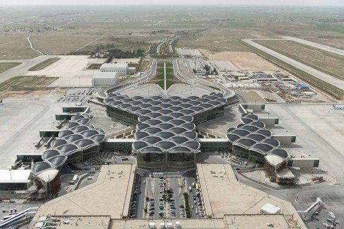

✈ Aeropuerto Alejandro Velasco Astete — Cusco (CUZ)Aerolíneas recomendadas desde Lima
Aclimatación: Llega a Cusco un día antes para adaptarte a los 3,400 m de altitud antes de subir a Machu Picchu.
Tren desde Cusco: PeruRail e Inca Rail conectan Cusco con Aguas Calientes. Reserva con anticipación.
Temporada ideal: Mayo a octubre (temporada seca). Evita enero-febrero por lluvias intensas.
Rango de precios desde Lima
$80 – $200 USDSolo vuelo Lima → Cusco (ida y vuelta). Precios varían según aerolínea y anticipación.

✈ Aeropuerto Internacional de Cancún (CUN)Aerolíneas recomendadas desde Lima
Mejor base: Cancún o Mérida. Desde Mérida son solo 1.5 horas a Chichén Itzá en auto.
Visita temprano: Abre a las 8 AM. Llega antes de las 10 AM para evitar el calor y las multitudes.
Temporada: Diciembre a abril. Los equinoccios (marzo/septiembre) tienen alta demanda; reserva con meses de anticipación.
Rango de precios desde Lima
$400 – $900 USDVuelo Lima → Cancún ida y vuelta, con una escala. Precios incluyen tasas.
Aerolíneas recomendadas desde Lima
Aeropuerto alternativo: Santos Dumont (SDU) está más cerca del centro de Río.
Subida al Corcovado: Usa el tren oficial desde el barrio de Santa Teresa. Compra boletos online.
Temporada: Abril a junio y agosto a octubre. Evita el Carnaval si no deseas multitudes y precios altos.
Rango de precios desde Lima
$350 – $750 USDLima → Río de Janeiro ida y vuelta. LATAM suele ofrecer las mejores tarifas.

✈ Aeropuerto Leonardo da Vinci — Roma Fiumicino (FCO)Aerolíneas recomendadas desde Lima
Visado: Los peruanos necesitan visa Schengen para entrar a Italia. Tramítala con al menos 8 semanas de anticipación.
Coliseo: Reserva entrada online con semanas de antelación. Entrada combinada con el Foro Romano.
Mejor temporada: Abril-junio o septiembre-octubre. Julio-agosto es muy caloroso y concurrido.
Rango de precios desde Lima
$700 – $1,500 USDLima → Roma ida y vuelta. Monitorea ofertas con 3-4 meses de anticipación.

✈ Aeropuerto Internacional Indira Gandhi — Nueva Delhi (DEL)Aerolíneas recomendadas desde Lima
Visa de India: Peruanos pueden solicitar e-Visa online hasta 4 días antes del viaje. Proceso sencillo y económico.
Tren Shatabdi: El tren rápido Delhi–Agra tarda solo 2 horas. Reserva en irctc.co.in.
Mejor época: Octubre a marzo. El verano indio (abril-junio) supera los 40°C.
Rango de precios desde Lima
$900 – $1,800 USDLima → Nueva Delhi ida y vuelta. Turkish Airlines suele tener las mejores tarifas.

✈ Aeropuerto Internacional Queen Alia — Amán (AMM)Aerolíneas recomendadas desde Lima
Jordan Pass: Incluye visa de entrada y acceso a más de 40 sitios, incluida Petra. Ahorra tiempo y dinero.
Noche en Petra: El espectáculo "Petra by Night" (lunes, miércoles y jueves) es imperdible.
Temporada: Marzo-mayo y septiembre-noviembre. El verano supera los 38°C en zonas desérticas.
Rango de precios desde Lima
$850 – $1,600 USDLima → Amán ida y vuelta. Incluye tasas aeroportuarias. Sin incluir Jordan Pass.
Aerolíneas recomendadas desde Lima
Visa China: Los peruanos necesitan visa. Tramítala en la Embajada China en Lima con 4-6 semanas de anticipación.
Sección recomendada: Mutianyu es más accesible y menos concurrida que Badaling. Teleférico disponible.
Temporada: Abril-junio o septiembre-octubre. Los inviernos son muy fríos y los veranos húmedos en Pekín.
Rango de precios desde Lima
$900 – $2,000 USDLima → Pekín ida y vuelta. Uno de los destinos más largos desde Sudamérica. Reserva con 3+ meses.